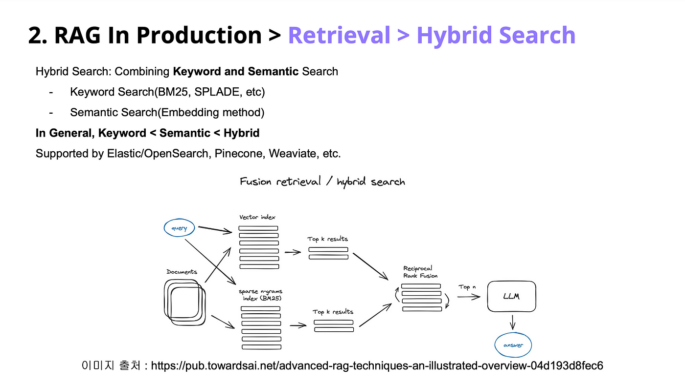
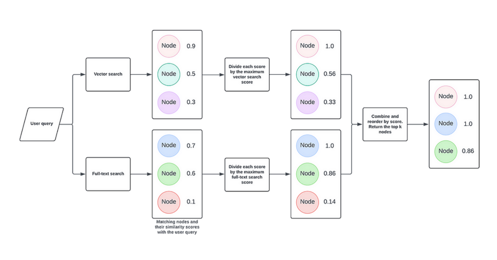
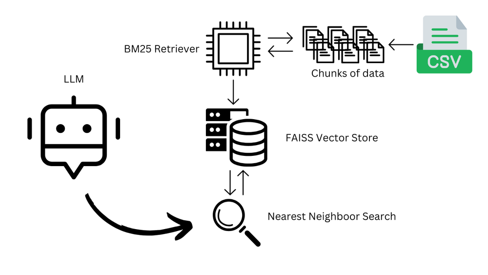
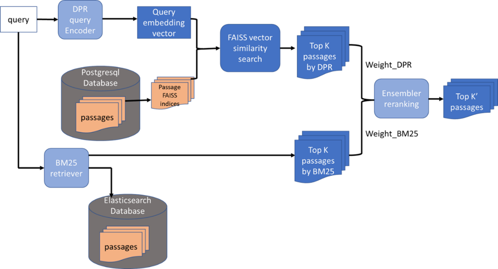

The Core Problem: The "Semantic Gap"
Retrieval-Augmented Generation (RAG) systems are incredible—until they aren't. You write a highly specific query, but the system brings back results that look relevant on the surface and completely miss the mark underneath.
The problem? Traditional retrieval often struggles to understand what you actually meant, especially when the query is vague, complex, or highly domain-specific.
When a user asks, "What are the latest treatments for Alzheimer's?", a traditional vector search might pull up general documents about neurology or aging, simply because they share a "semantic neighborhood" with the query. It gets you to the right city, but not the right house.
Figure 1: Traditional Hybrid Retrieval Pipeline (DPR + BM25)

Traditional systems combine dense (DPR) and sparse (BM25) retrievers, then use ensemble reranking to merge results. HyDE improves upon this by enriching the query itself before retrieval.
What is HyDE?
Hypothetical Document Embeddings (HyDE) addresses the missing puzzle piece by creating a synthetic one. Instead of embedding the user's short query directly, HyDE uses a Large Language Model (LLM) to generate a hypothetical document (or hypothetical answer) that would answer the query. This synthetic document is then embedded into a vector and used to search the database.
📚 The Librarian Analogy
Imagine you ask a librarian for "books about the economic impact of 19th-century French agriculture."
❌ Traditional RAG
The librarian searches the catalog for those exact words and brings you a random mix of history and farming books.
✅ HyDE
The librarian sits down, writes a one-page mock summary of what a perfect book on that topic would look like, then searches the catalog for books that match that exact summary.
By transforming a vague query into a structured, semantically rich narrative, HyDE aligns the user's intent perfectly with the latent structure of the document corpus.
Step-by-Step: How the HyDE Pipeline Works
Let's walk through the exact mechanics of a HyDE-enhanced RAG pipeline.
The User Query
The process begins with a user asking a question.
Generating the Hypothetical Document
The query is sent to an LLM with a specific prompt:
Hypothetical Doc Generated: "Quantum decoherence occurs when a qubit interacts with its environment, causing the loss of quantum superposition..."
Embedding the Hypothetical Document
Instead of embedding the 8-word user query, the system embeds the 50-word hypothetical document. Because this text is long, detailed, and rich in domain-specific terminology, its vector representation is incredibly precise.
Vector Search & Reranking
This dense vector is sent to the Vector Database. Because the hypothetical document's vector closely mirrors the vectors of actual scientific papers, the database retrieves highly relevant documents. A Cross-Encoder Reranker then filters these down to the Top 3.
Final Generation
The LLM reads the Top 3 actual retrieved documents and generates the final, factually accurate response for the user.
Figure 2: Fusion Retrieval / Hybrid Search Architecture

HyDE integrates into this fusion pipeline by enriching the initial query before it branches into both vector and sparse indices, improving the quality of both retrieval paths.
[ User Query ]
│
▼
[ LLM generates Hypothetical Answer/Document ]
│
▼
[ Embed Hypothetical Document into Vector ]
│
▼
[ Vector DB Search ] ➔ [ Cross-Encoder Reranker ] ➔ [ Top 3 Real Docs ]
│
▼
[ LLM generates Final Factual Response ]Figure 3: Score Normalization in Hybrid Retrieval

After HyDE produces the enriched query vector, both vector and full-text scores are normalized and combined to return the top-k most relevant nodes.
HyDE vs. Traditional Query Expansion
How does this compare to older methods of query expansion?
| Feature | Traditional Query Expansion | HyDE |
|---|---|---|
| Mechanism | Rephrasing the query or appending synonyms/keywords. | Generating a full, synthetic paragraph/document answering the query. |
| Semantic Depth | Low. Still relies on surface-level word manipulation. | High. Captures deep contextual meaning and latent intent. |
| Vector Alignment | Short query vector vs. Long document vector (Mismatch). | Long hypothetical vector vs. Long document vector (Perfect Match). |
| Best Use Case | Simple, everyday search queries. | Complex, domain-specific, or highly ambiguous queries. |
The Superpowers of HyDE
Zero-Shot Brilliance
Traditional dense retrievers require massive labeled datasets. HyDE bypasses this entirely, working out-of-the-box in domains with sparse training data.
Multilingual Generalization
Ask in Spanish, get English documents. HyDE embeddings maintain semantic fidelity across languages without separate models.
Drastic Noise Reduction
By forcing the system to look for a full narrative rather than isolated keywords, HyDE naturally filters out buzzword-only documents.
Figure 4: BM25 Retriever + FAISS Vector Store + LLM Pipeline

HyDE enhances this classic pipeline by transforming the query before it enters the FAISS vector store, ensuring the nearest neighbor search operates on a semantically rich representation.
The Trade-Offs: A Balanced Perspective
No technology is a silver bullet. To implement HyDE effectively, you must understand its limitations.
⏱️ 1. The Latency and Cost Tax
HyDE requires an extra call to an LLM before the retrieval step. Generating a hypothetical document takes time and compute. If your RAG application requires millisecond latency, the extra 500ms–1000ms added by HyDE might be unacceptable.
🤖 2. Dependency on LLM Quality
HyDE is only as good as the LLM generating the hypothetical document. If the LLM hallucinates wildly or generates a document that completely diverges from the query's true intent, the vector search will follow it down the wrong path.
⚠️ 3. The "Hallucination Trap"
If the hypothetical document is too confident in its fake facts, the vector search might retrieve documents that match those fake facts. This is why it is crucial to prompt the LLM to generate the hypothetical document in an objective, academic tone, and to rely on the Reranker to verify the final retrieved documents.
Advanced Optimizations & FAQ
🚀 Production Optimizations
Domain-Specific Fine-Tuning
In healthcare or law, a generic LLM might generate a hypothetical document that lacks clinical or legal granularity. Fine-tuning the LLM on domain-specific data ensures the generated proxy uses the correct jargon (e.g., ICD-10 codes in medicine).
Reinforcement Learning (RL) Integration
Advanced pipelines use RL agents to evaluate the relevance of the retrieved documents. If the retrieval was poor, the RL agent provides feedback to tweak how the LLM generates future hypothetical documents, creating a self-improving loop.
❓ Frequently Asked Questions
Q: How does HyDE use entity relationships in RAG?
When generating the hypothetical document, the LLM naturally includes key entities (names, dates, specific technologies) related to the query. This enriches the vector embedding with entity-level context, making it much easier to retrieve documents that discuss those exact entities.
Q: What is salience analysis in the context of HyDE?
Salience analysis involves weighing the importance of different sentences within the generated hypothetical document. By identifying the most "salient" (important) parts of the hypothetical text, the system can weight those specific concepts more heavily during the vector similarity search.
Q: How does co-occurrence optimization reduce noise?
In specialized fields, certain words always appear together (e.g., "myocardial" and "infarction"). HyDE naturally groups these co-occurring terms into the hypothetical document. This prevents the retriever from pulling up documents that mention "myocardial" in a completely unrelated context, drastically reducing noise.
Conclusion
Query Expansion using HyDE is fundamentally reshaping how Retrieval-Augmented Generation systems understand complex human intent. By generating hypothetical documents, HyDE captures the context and nuance that keyword-based and standard vector methods miss.
While it introduces trade-offs in latency and cost, the payoff in retrieval accuracy—especially in zero-shot, highly technical, or ambiguous scenarios—is undeniable.
Think of HyDE not just as a retrieval trick, but as a semantic lens. It doesn't just magnify relevant data; it refines it, ensuring clarity and precision.